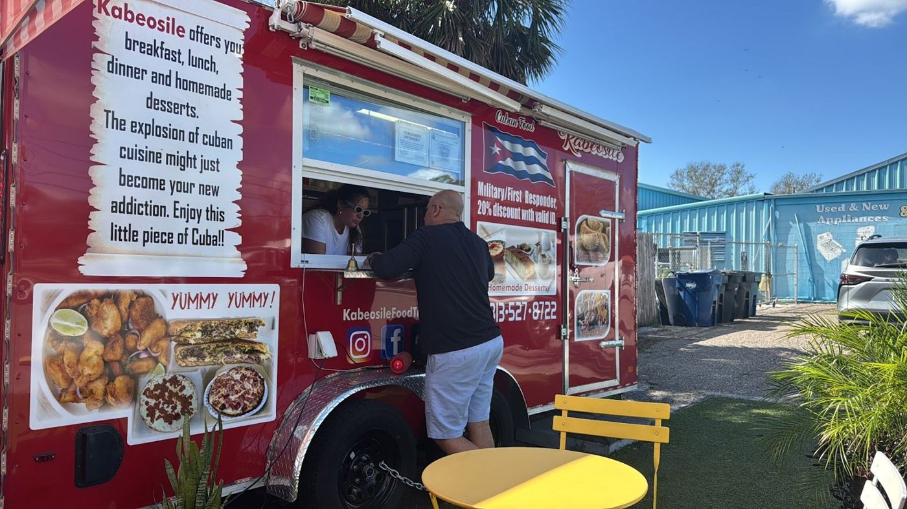

4.9★ reviews
“We found this place by accident. It transported us to Cuba and its pizzas. The food is great and the environment is quiet. I totally recommend this food truck for both its food and also its prices.”
“This Cuban food truck is an absolute gem! The food is authentic, fresh, and packed with flavor. The pork was tender and perfectly seasoned, and the tostones were crispy and delicious. Their Cuban sandwich is hands down one of the best I’ve had—perfectly pressed with the right…”
“This is the best food truck in town. From parking to food quality. Plenty of parking spots, comfortable spaces to be alone or a big table to share with family and friends, perfect atmosphere with your preferred music playing, very hygienic and impecable food quality and…”
“Best Cuban pizzas and sandwiches, when visiting Tampas. A very clean place, cozy and familiar atmosphere, great to share with family and Friends.High professional and friendly service. I highly recommend it. 👍👍👍”
“I absolutely love going here to eat whenever my husband and I are in Tampa. The chicken with fries and mayo ketchup is my favorite. The empanadas are also a must have for me!”
“I’ve had Cuban pizza in Cuba and in the states, and Kabeosiles Cuban Pizza is hands down the best I have ever had. It provided that taste from home but with better ingredients. Their home made Kabeosile sauce is addictive! I go here everytime I don’t feel like cooking. See you…”
“The best pizzas and exquisite traditional Cuban food. Amazing people and preferential treatment... a place to always go to.”
“This was my first time trying Cuban pizza and if I'm going to be honest it's not as good is normal Pizza that being said the guy was super nice and his menu had a lot of interesting things so I will be going back to try it again also his prices were fantastic so I would still…”